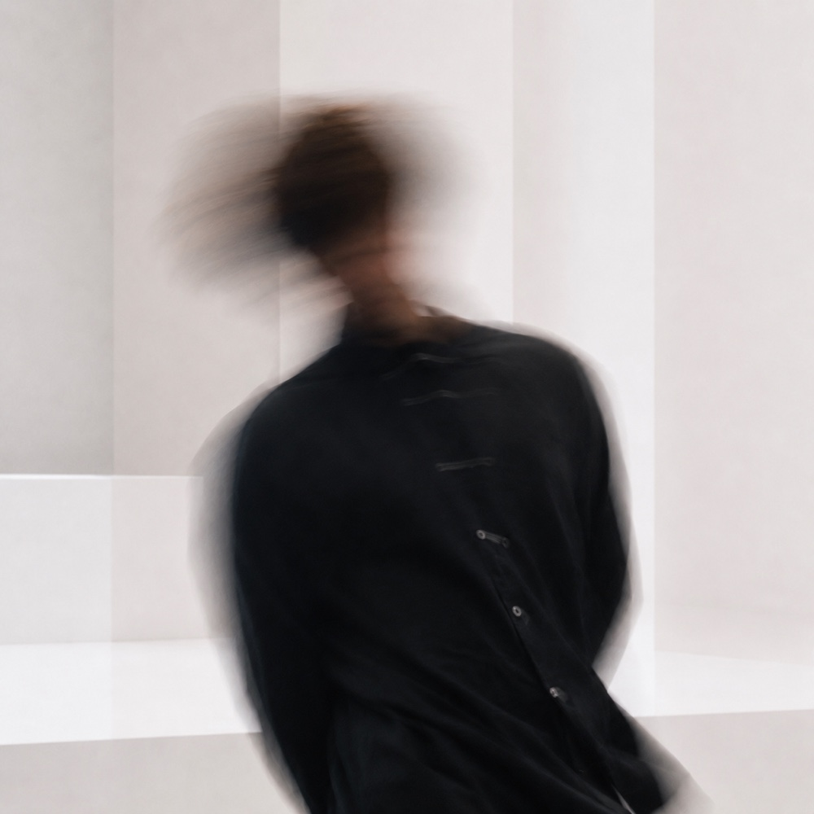

Sound Producer / Composer
Ryohey
Nakamura
Works
News
Commission
空きあり（2026年9月時点）
TVCM・Webムービー・アニメーションPVなどの映像音楽を中心に、楽曲制作・プロデュースとサウンドデザインのご依頼を受け付けています。企画やコンテの段階からのご相談も歓迎です。
映像音楽
TVCM・Webムービー・アニメーションPV / ティザーの音楽制作。映像の演出と同期したアプローチを得意としています。
楽曲制作・プロデュース
アーティストへの楽曲提供・作編曲・プロデュース。エレクトロニックからオーケストラ、Jazzまで幅広く対応します。
サウンドデザイン
アプリ・プロダクトのUIサウンドや通知音、サウンドロゴ、映像の効果音など、「機能する音」の設計。鳴る場面から逆算して、音楽と同じ耳で作ります。
進め方
- メールでお問い合わせ
- ヒアリングとお見積り
- デモと方向性のすり合わせ
- 本制作・納品
上記以外の音まわりのご相談も歓迎です。納期・費用は内容によって変わります。
メールで相談するAbout

Profile
Ryohey Nakamura
リョウヘイ・ナカムラ
Sound Producer / Composer
1999年生まれ。九州大学芸術工学部音響設計学科卒業。
大学在学中よりフリーランスとして音楽活動を開始し、DTMによる制作を中心に大学内外を問わず活動の幅を広げる。音楽とその他のコンテンツの結び付きについて特に強い関心があり、映像演出などと紐づいたアプローチを得意とする。
Dubstep、Drum'n'Bass、Houseなどを音楽制作のルーツに持つ一方で、体系的な音楽理論に基づいたオーケストレーションやJazzプレイヤーとしての経験もあり、多彩なジャンルを取り入れた独自のスタイルを展開している。
2023年に株式会社インビジに入社。